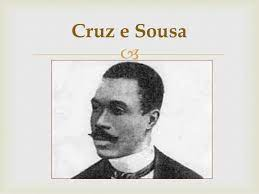

Biografia

Cruz e Souza, nome completo João da Cruz e Sousa, foi um renomado poeta brasileiro do Simbolismo. Nascido em 1861 em Santa Catarina e falecido em 1898 no Rio de Janeiro, ele é considerado um dos maiores expoentes da literatura brasileira. Suas principais obras publicadas são "Missal" (1893), "Broquéis" (1893) e "Faróis" (1900). Sua poesia é caracterizada pelo uso de imagens simbólicas, explorando temas como o amor, a morte e a angústia. Cruz e Souza aborda questões sociais, raciais e existenciais em sua escrita. Sua linguagem é rica, musical e expressiva, com versos marcados pela sensibilidade e intensidade emocional. Ele deixou um legado significativo na literatura brasileira, sendo reconhecido por sua contribuição ao movimento simbolista.
Movimento literário
Movimento Literário:
-Uso de Símbolos e Metáforas: O Simbolismo enfatiza o uso de
símbolos, metáforas e imagens poéticas para representar o mundo
interior e o subconsciente. Os poemas de Cruz e Souza em "Broquéis"
são repletos de simbolismo e imagens fortes.
-Preocupação com o Inconsciente: Os simbolistas se preocupavam com
o mundo interior e as emoções humanas, e isso é evidente nos poemas
de Cruz e Souza, que frequentemente exploram temas como a
melancolia, a espiritualidade e o misticismo.
-Busca pela Originalidade: Os simbolistas buscavam ser originais e
quebrar com as convenções poéticas tradicionais, o que é visível em
"Broquéis" com a inovação na linguagem e na forma poética.
Cruz e Souza é associado ao movimento literário do Simbolismo no
Brasil. O Simbolismo é caracterizado por:
Panorama Histórico
-Abolição da Escravidão (1888): Em 1888, o Brasil finalmente
aboliu a escravidão, o que representou um marco importante
na história do país e teve implicações significativas na
sociedade brasileira.
-Proclamação da República (1889): Em 1889, o Brasil passou
por um movimento que resultou na proclamação da
República, derrubando a monarquia. Isso levou a mudanças
políticas e sociais significativas.
-Industrialização e Urbanização: O final do século XIX
também foi um período de crescente industrialização e
urbanização no Brasil, com cidades crescendo rapidamente e
mudanças na economia.